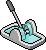
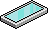
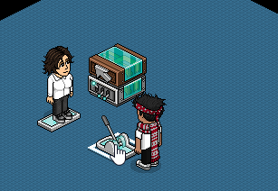
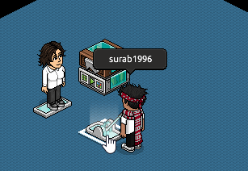

Schnelle Tutorials
Tür auf/zu
Wireds:
Wireds:

WIRED Auslöser: Möbel wird verwendet

WIRED Effekt: Möbelzustände umschalten
Möbel:

Bodenschalter 1

Glastür
Allgemein:
Es gibt verschiedene Möglichkeiten Türen zu öffnen/schließen. Z. B. durch einen anderen Habbo also manuell oder auch vollautomatisch. Hier wird einer der leichtesten Möglichkeiten gezeigt.
Einstellung:
Im Wired "Möbel wird verwendet" wird das Möbel ausgewählt welches vom Habbo geändert wird der die Tür öffnen möchte. Es muss also ein Möbel sein, der seinen Zustand beim Doppelklicken verändern kann. Nur solche Möbel können für den Auslöser gebraucht werden. So ein Möbel ist beispielsweise der Bodenschalter.
Wenn dann jemand den Schalter betätigt erkennt das Wired, dass der Zustand von einem Habbo geändert wurde. Das kann man dadurch erkennen, dass das Wired aufblinkt:
Danach muss nur noch der Effekt eingestellt werden. Eine Tür hat normalerweise immer zwei Zustände. Auf oder zu und mit Möbelzustand umschalten kann man diese Zustände wechseln. Dafür muss man nur die Tür auswählen.
Das Wired sorgt dann immer dafür, dass man zum nächsten Zustand schaltet. Im konkreten Fall wird die Tür geöffnet, wenn sie vorher geschlossen war und wird geschlossen, wenn sie vorher geöffnet war.
Habbo Beta/Unity:
Hast du gewusst?
Der Zustand einer Tür (und ähnlichen Möbeln) kann nicht geändert werden, wenn ein Habbo darauf steht außer der Zustand wird durch das Wired Möbelstück nimmt Zustand und Position ein (kurz "Posi"-Wired) geändert.

Die Tür kann nicht durch Möbelzustände umschalten geschlossen werden, wenn ein Habbo auf der Tür steht

Die Tür kann aber durch das "Posi"-Wired geschlossen werden
Das ist z. B. wichtig bei Eingängen, die so schnell wie möglich geschlossen werden sollen.
Kommentare wurden im Zuge der Migration entfernt. Diskussion findet inzwischen im Discord der easyWIRED-Community statt.